Cliff language proposal
Cliff Cleaving
Every one of the 15 reference walls is one volume of rock cut by a few families of flat planes. Today's cliff words build a wall out of rows of stones. This page proposes one new node, cleave, that cuts the region with a family of planes, and retires about thirty words it replaces.
Printing is a short note at the end. The test here is how close the look gets, and whether the same few words would fit a sixteenth photo.
What the references are made of
Each picture, in five plain words: massing (the shape of the whole), face, joints, crest, surface. They fall into three families.
Slab walls
Large flat faces cut by a few joints. Massing is one plane (or two). The crest is level or lightly broken. D differs: its joints are oblique.
 L Tall flat wall
L Tall flat wall- massing
- one slab wall, a back plane
- face
- big flat slabs, thin cracks
- joints
- 3 or 4 irregular rows, few verticals
- crest
- level, a little broken
- surface
- planar, small chips
 J Corner
J Corner- massing
- two walls meeting
- face
- wide flat slabs
- joints
- rows and wide verticals
- crest
- level
- surface
- planar
 D Cap over facets
D Cap over facets- massing
- wide mass, three sides
- face
- big oblique facets
- joints
- diagonal, crossing
- crest
- heavy cap hangs out
- surface
- planar, sharp edges
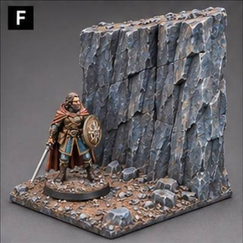
F Sheer strips- massing
- one tall plane, almost no depth
- face
- narrow vertical strips
- joints
- vertical, continuous
- crest
- uniform
- surface
- planar, fine cracks
Columns
Steep joints dominate and run up the whole height. Each column ends where it likes, so the skyline is the picture. P and C lean or stack.
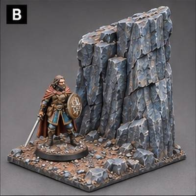
B Ragged columns- massing
- tall narrow columns
- face
- vertical slivers
- joints
- vertical, straight up
- crest
- ragged, rising to one side
- surface
- planar
 M Skyline
M Skyline- massing
- columns of different heights, loose blocks in front
- face
- square blocks
- joints
- vertical, some rows
- crest
- each column its own top
- surface
- planar
 P Leaning spires
P Leaning spires- massing
- several tall columns leaning together
- face
- long tapering faces
- joints
- steep and parallel
- crest
- sloping, each its own
- surface
- planar
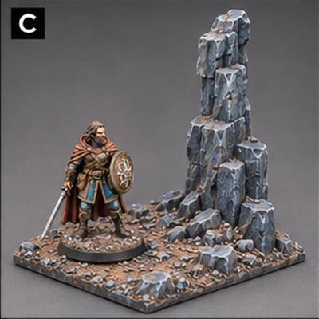
C Tower- massing
- one narrow stack of small blocks
- face
- small blocks
- joints
- rows and short verticals
- crest
- ragged
- surface
- planar
Strata and ledges
Thin or thick horizontal courses. Each course sits at its own depth, so the front steps, hangs or terraces. N is the same strata made long and free-standing.
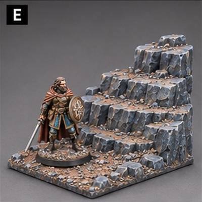
E Terraces- massing
- 4 or 5 ledges stepping back and up
- face
- thin slab fronts
- joints
- thin strata, few verticals
- crest
- rises stepwise
- surface
- flat tops, sharp lips
 G Ramp
G Ramp- massing
- rows tilt, tall rear to low front
- face
- big blocks
- joints
- tilted rows
- crest
- falls on a diagonal
- surface
- planar
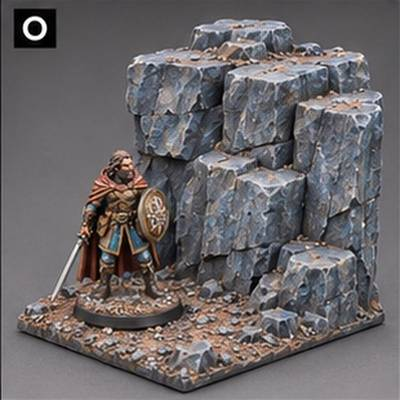
O Chunky blocks- massing
- blocks at stepped depths
- face
- big flat faces
- joints
- rows and verticals
- crest
- stepped
- surface
- planar, sharp cracks, flat tops
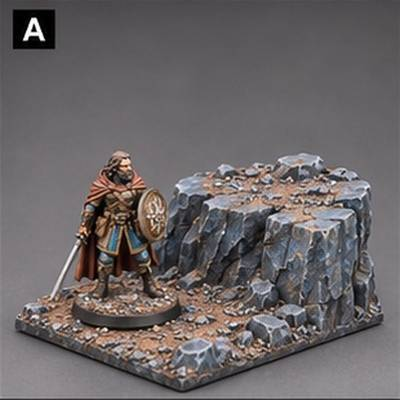
A Low massif- massing
- short, wide
- face
- wide flat blocks
- joints
- few rows
- crest
- flat plateau
- surface
- planar
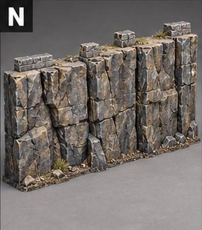
N Free-standing wall- massing
- a long wall of tall blocks, several squares
- face
- rectangular faces
- joints
- running bond, vertical joints
- crest
- flat, with small caps
- surface
- planar, moss
 Lf Ledges
Lf Ledges- massing
- thick strata, each hangs over the one below
- face
- horizontal strata
- joints
- long horizontal, few verticals
- crest
- stepped, big overhangs
- surface
- rough, moss
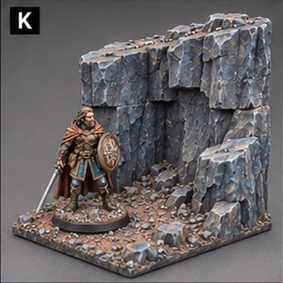
K Bay and lip- massing
- a deep bay in the middle under a lip
- face
- flat slabs, larger at right
- joints
- rows and verticals
- crest
- lip over the bay
- surface
- planar
Debris at the foot (A, N, Lf and most of the others) is out of scope: the ground belongs to other elements.
Five ideas that explain all fifteen
Dots in the table show which ideas each picture needs. Idea 1 is in every one.
| Joint sets | Depth per cell | Tops are planes | Hewn faces | Lean and convergence |
|---|
| L | | | | | |
|---|
| J | | | | | |
|---|
| D | | | | | |
|---|
| F | | | | | |
|---|
| B | | | | | |
|---|
| M | | | | | |
|---|
| P | | | | | |
|---|
| C | | | | | |
|---|
| E | | | | | |
|---|
| G | | | | | |
|---|
| O | | | | | |
|---|
| A | | | | | |
|---|
| N | | | | | |
|---|
| Lf | | | | | |
|---|
| K | | | | | |
|---|
1. Joint sets
A wall is a volume cut by families of near-parallel planes. A block is a cell between them. Horizontal planes give courses. Vertical planes give columns. A set tilted at 60 degrees gives the big slanted facets of D. A set's planes may run through the whole wall or stop at the next plane of another set; that one choice separates a grid, a running bond and loose fieldstone.
2. Depth per cell
Each cell sits a step in front of or behind its neighbour along the set. Courses that each step back are terraces (E). Courses that step forward are a ledge or a cap (Lf, D, K). Neighbouring columns at different depths are the stepped front of O and the loose blocks of M.
3. The crest is a height per cell
The top of the wall is a height function of position, sampled once per cell. Cells are discrete, so the crest is made of flat block tops: a skyline (M, B), steps (E), a diagonal ramp (G), a flat plateau (A, N). No separate crest machinery.
4. Broken faces are finer levels
The references show flat faces, square edges and many flat breaks. A face is broken by the same cutting again inside each block, at a fraction of the size: each piece moves only its share of the face, a little back and a little turned, so the block stays one body behind it. Corner chips are the finest level. There is no separate surface stage (see One mass, broken at several sizes).
5. Lean and convergence
A set's dip can wobble up the wall, and its planes can lean toward a point. That makes the leaning spires of P and the tilted rows of G without a word for either.
The footprint stays as it is. A corner (J), a free-standing wall (N), a tower (C) and a bay (K) are regions and a top, which the language already has.
The proposed words
A cliff takes cleave children: zero, one or many, in any order (a set of cuts, not a sequence). With none, the cliff is one flat-faced block filling its region.
| Word | Meaning | Status |
|---|
cleave | A family of near-parallel cut planes. A new kind, Cut, so it can be named with let and passed as a param like a thing or a layer. | new |
dip | Angle of the planes from horizontal: 0 is bedding, 90 is vertical. A range wobbles from foot to crest. | new row rock already uses it |
facing | Direction the planes face in plan, as an angle measured from the outward normal of the free face that owns the cell's centroid (ties: the lowest face id). Angle only. | new row rock already uses it |
toward | A point the planes lean toward. Replaces facing for converging sets. | new |
spacing | Pitch between neighbouring planes, along their normal. Takes the same forms as top: a range, a weighted range, an expression. | new |
bend | The spread of each plane's direction about the set's own. Leaning slab ends off square is this, not a new set. | new |
carry | How far a plane of this set runs: 1 through the whole region, 0 only to the next plane of any other set. | new row rock already uses it |
setback | How far this cell's share of the free face stands back from where the region's free face would put it, measured along that face's outward normal, not the set's. Positive is against the normal (back), negative is out along it. A cell is one interval between neighbouring planes of the set; each cell draws its own value from the range, the same rule on every set. Values from several sets add; absent is 0. A cell with no free face (interior, or under the crest) ignores it. On a curved face the normal is the one at the cell's own face. Overhang is checked on the resulting face, not on the setback value. | new row meaning changed rock's chunks panel must be read first: same rule or the rock page changes with it |
inside | A level: a group of cleave sets that cuts every cell of the level before it. Takes cover. Details in One mass, broken at several sizes. | new |
tilt | On a cleave: how far each cell's share of the free face turns away from that face, a range in degrees drawn per cell; one row with the rock's chunks tilt. | new row rock already uses it |
top, joints, bumpSize | Kept, each with its own meaning. bumpSize may be written on a cleave or on a weighted range, so setback and bend get a correlation length. | kept |
width height bond shift wander rise span regularity lean tilt wave width skew, height skew, planes.* | The row model. Spacing, dip, bend and carry hold each of them. Exact half-offset brick bond is lost: a carry below 1 is a chance, not an offset. | retired |
recess lip sbw.* band.* | Setback, per cleave. A lip on one course is a negative step on that course. | retired |
crest.bumps crest.w | A weighted range on top. | retired |
free.* depth tiles wall | The region says them: a free face is any face that is not a seam, thickness is the region's own within, run and wall are its at=. Choosing which free faces get relief is lost until the region can say it. | retired |
outl.* | Stay until phase 3, when the stone's own outline is a cleave on rock. | kept for now |
Count: eleven words enter the registry (four already live in the rock's explorer panel), about thirty leave the cliff. Rock's cuts and chunks panels fold into cleave in phase 3, for the shape of the stone only. Texture is finer inside levels and chips.
cliff at=crag top="[48dmm..60dmm]" {
cleave dip=0deg spacing="[11dmm..15dmm]" carry=0.35
setback="[0dmm..6dmm]"
cleave dip=90deg facing=0deg spacing="[10dmm..14dmm]" carry=0.35
inside {
cleave dip=90deg spacing="[5dmm..9dmm]" setback="[0.2dmm..0.8dmm]" tilt="[1deg..4deg]"
}
rock { chips=3 }
}
That is the O generator's recipe: level courses with a depth push per block, joints that repeat the one below about a third of the time, each block's face broken into a few pieces set back and turned a little, and chipped corners.
Four references in the proposed words
The schematics show what the sets cut. They are drawings of the idea, not renders: the engine is not touched on this page.
M. Skyline of columns
reference
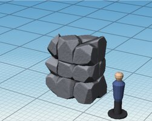
best today
what the sets cut (schematic, not a render)
cliff at=crag top="[34dmm..62dmm]" bumpSize=14dmm {
cleave dip=90deg facing=0deg
spacing="[10dmm..14dmm]" carry=1
cleave dip=0deg spacing="[10dmm..16dmm]"
carry=0 wander=0.4 setback="[-3dmm..3dmm]"
}
Vertical joints run the full height (carry 1), so columns are separate. The bedding set is independent per column (carry 0), so each column has its own rows and its own top. Setback steps each block in or out from its neighbour along the wall, so some stand in front.
E. Terraces
reference
 best today
what the sets cut (schematic, not a render)
best today
what the sets cut (schematic, not a render)
cliff at=crag top="$edge + 8dmm + 24dmm * $y / 35" {
cleave dip=2deg facing=0deg
spacing="[6.5dmm..10dmm]" carry=1
setback="[4dmm..7dmm]"
cleave dip=90deg facing=0deg
spacing="[12dmm..22dmm]" carry=0.3
}
Thin strata, each standing back from the one below: that is the whole terrace. The crest rises with depth into the wall, and each block ends on a bedding plane, so it rises in steps.
P. Leaning spires
reference
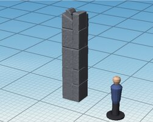
best today
what the sets cut (schematic, not a render)
cliff at=spires top="[56dmm..68dmm]" {
cleave dip="[72deg..80deg]" toward="0.5,0.5"
spacing="[4dmm..7dmm]" carry=1
cleave dip=0deg spacing="[10dmm..14dmm]" carry=0
}
A steep set whose planes lean toward a point, so every column leans in toward the middle. The region is three summits, as today. The word toward names a point; facing stays an angle.
D. Oblique facets and a cap
reference
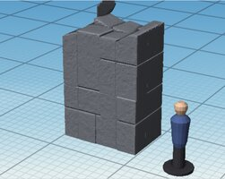
best today
what the sets cut (schematic, not a render)
cliff at=crag top="[44dmm..56dmm]" {
cleave dip=0deg spacing="[12dmm..18dmm]" carry=0.9
setback="[-4dmm..-2.5dmm]"
cleave dip=60deg facing=30deg
spacing="[8dmm..15dmm]" carry=0.5
cleave dip=90deg facing=0deg
spacing="[8dmm..15dmm]"
}
A third set at 60 degrees makes the big slanted facets that no row-and-column wall can. The bedding set steps each course forward (negative setback), so the top course hangs out as the cap.
What stays out of reach
- Moss, painted wear and the grain of the stone surface: finish words, not massing.
- Exact brick bond in N: carry is a chance.
- Choosing which free face gets relief and which stays plain.
- The return face (a side face seen at an angle), chipped vertical edges and darkening in the crevices were also missing from the generator. A return face is the region's job. Hew keeps edges flat on purpose, so chipped edges need another step. Crevice darkening is paint, not shape. All three are open.
Language check
Words
inside is new and does one job: a level of cuts inside each cell of the level before. cleave is new and does one job: a family of planes. dip, facing, carry, setback are the rock's page words promoted to registry rows, each with one meaning that rock's chunks panel then shares. toward, spacing, bend are new, each for a thing no word names. bond is retired in favour of carry: one meaning, one word. wander is retired rather than reused, so no old document changes meaning silently. spacing (pitch) and joints (groove width) stay apart.
Kinds
A new kind, Cut, with units::fits rules and a row in the closure test, so a cleave can be named, passed, overridden and imported like a thing or a layer. A cliff accepts any number of them.
Kernel
A cliff reduces to: a region, a crest height, and a set of plane families. The old rows, bond, recess, lip, band, lean, tilt and crest bumps are all special cases of one family's spacing, dip, carry and setback.
Second paths
One way to say each: no word has two spellings. The crest has one source, top; steps come from cell sampling and need no bedding set, so top means the same with any siblings.
Holes
Closed: Cut gets every verb. A group of Cuts is a Cut, with a closure cell. Open: no way yet to say which free faces get relief; the interim outl.* words are a second path to the stone's outline until phase 3 removes them.
Orin's ruling
Approve with changes. The kernel is sound: one node that cuts a volume replaces about thirty hand-tuned words. Six defects, and what changed in this page:
facing had two meanings and a keyword. Now an angle only, measured from the nearest free face's outward normal; front is gone. A point is the new word toward.setback had two semantics. Now one: the step from the previous cell along the set, with the order and the sign stated.bond and carry were two words for one meaning. bond is retired. carry now says what it runs through: the planes of the other sets. The loss of exact brick bond is stated.wander reused a retired word for a new job. New word bend. Irregularity of spacing is the width of the spacing range. bumpSize is allowed on a cleave and on a weighted range.cleave was a second-class node. New kind Cut, so it can be named and passed. Order carries no meaning; zero cleaves is one flat block.top changed meaning with its siblings. Steps now come from sampling per cell, so top means the same in every cliff. spacing takes the same forms as top, so width and height skew are not lost.
Second ruling, on hew: approve with changes. hew is one job and not pockets or chips renamed (those remove volume; it facets a face), and it cannot be a mode of cleave. Changed: it no longer borrows the rock's size and depth, which the registry gives other meanings (a rock's width; the look of gaps). It uses spacing and a new push. The hew and wear order is now stated, and a closure cell and torture tile are called for.
Also taken: the word count is ten new rows, not one; outl.* stays until phase 3; tiles, wall, free.* and depth are accounted for above; the interim losses are listed.
What the O generator learned
A from-scratch generator for reference O, with no controls, built convex blocks from lists of planes and tried to match the picture. It bears on the proposal like this.
- Idea 4 changed. Cutting finer planes into a block rounds its corners every time. Tilts above about 0.3 or more than three big chips bring the pillows back. Hewing the face (flat boundary, jittered facets inside) is what made the faces read as rock. It is now its own word,
hew.
- Massing carries more than texture. Level courses of 11 to 15dmm, a depth push per block of 0 to 6dmm and dark joints already read as O. Idea 2 holds, and
joints matters.
- Boxes at stepped height and depth were a lever of their own. That is a region with a
top that varies per cell, as proposed.
- About a third of vertical joints repeat the joint below. That is
carry near 0.35, a number to estimate from a picture.
- Weakest: a small cleave tilt and one to three edge bites. Small cap blocks on the top course helped break the skyline: a
spacing that shrinks near the top.
- A convex block is a list of planes, so a new reference needs only different plane distributions. That is the case for
cleave as the one cutting word.
- Rounds 6 to 9 (v5), composition and depth. What carried:
setback per cell (the recess under an overhang is one cell set back 6 to 8dmm with the cell above set forward 2 to 3dmm), courses 11.5 to 14.5dmm, joints about every 14dmm (three wide blocks to a course, not five small), and the foot as a scatter of the wall's own rock turned about the vertical at at=foot. The wall now fills the width as in O. Ad hoc: the mass columns are still three fixed boxes at hand-set widths, and the overhang needed a negative setback, which the proposal does not say is allowed (an open question for setback: a range that may cross zero). Dark joints and recesses came from a shadow map in the viewer, not from geometry, so they are not the language's business; but O needs them, so a build that wants O's look needs deep, real joints in the model (a joints width and depth) because a printed tile has no shadow map.
- Rounds 10 to 14 (v6, v7), breaking the blocks. What carried the detail:
cleave for the big bevels (a chamfer plane 1.6 to 3.4dmm in along the top-front edge of most blocks, a second on a side or vertical edge on about half: chunky blocks, not cubes), and hew for the faces. hew was not enough as jitter alone. What made the faces read as O's cracked facets was bending each face first by two or three planes leaning 0.12 to 0.3, joined by min or max (a crest or a trough), and only then jittering by 0.55 of the old amount. The language has no word for this yet. hew would need a lean per face and a plane count, perhaps by reusing bend; that is an open question and has not been through the design check or Orin, so no word is added. The sharp cracks are then the lines where those planes meet, as in cleave itself. Per-facet tone, a low-contrast key light and a dark cool base colour (about a quarter of the old brightness) gave the contrast; that is the viewer's, not the language's. The left return face came from the camera and the leftmost column standing proud, no new geometry.
- Ad hoc in rounds 10 to 14, the important part. (1) The foot blocks are boxes with their own turn, not a
scatter of the wall's rock: a real scatter at=foot should draw them from the same cleave and hew as the wall, and here they got only the default bevels. (2) The mass columns and the recess/overhang pair were fixed by hand; no word says "a cell near here is set back and the one above it forward". The nearest is setback as a per-cell range, which would need to be a function of the cell above. (3) Joints are not model cuts: O's dark joints came from a shadow map and from gaps between neighbours' back faces, so a printed tile needs a joints width and depth as geometry. (4) The skyline's small cap blocks are placed on the top course by a probability, not by any word. Still off: facets are triangles; O's are ragged polygons. A hew that fills with Voronoi cells and not Delaunay triangles would fit but is a new construction, so it is left for a design pass and Orin, not added here. Words used: cleave, hew (open: a lean per face), setback, joints, carry, spacing, top.
- Pass 3 (v11): the face tree is set aside, and solid recursion replaces it. A face tree splits a surface into polygons and leans them; polygons are plates, and plates overlap and open slits to the inside whatever the amplitudes. v9 and v10 were worse than v8 for that reason. The method is wrong, not the settings, so it is dropped, and what it taught is kept only where it carries over: the minimum piece width, the crack that stops short, and the corner chips. What worked is recursion on solids, the same operation as the level above: (1) level 1, v8's blocks (cleave, courses, joints, depth push); (2) level 2, the outer skin: the outer 3 to 4dmm of a block, front and top only, is cleaved by two to five straight cracks into convex solid pieces; each piece is set back 0.4 to 1.9dmm (a fifth a little more) and turned 1 to 9 degrees, as the rock explorer's
chunks does (setback, tilt), with a 0.1dmm seam to its neighbours; the block's core stays whole behind it, darker; (3) level 3: each skin piece loses up to three corners to planar chips (corners in chunks, or cuts with aim near 1), which only remove material. A piece that is moved is still a closed hull, so no slit can open to the inside, and a crack that "dies" is simply a skin cut that stops at the core. That alone gives the one-mass read: the core is one body and the skin is what is broken.
- Which word carried what in v11. Level 1:
cleave, spacing, joints, setback. Level 2: cleave again (the same word, inside the block, at a fraction of the size, limited to a depth), plus setback and tilt per piece. Level 3: chips at the corners. No hew at all: it is not needed, which is evidence that hew is a cleave at a small scale plus setback/tilt, and can go. Ad hoc: the skin depth (3 to 4dmm, as a share of the block it would be about a quarter of the thinner side) and the minimum piece width; both are proposed as properties of a cleave set when it is nested (a depth into the cell from its free faces, and a floor on piece size). Proposed here, then reconciled with N and reviewed by Orin in One mass, broken at several sizes; run from pass 1 is withdrawn, because the skin cut stops at the core by construction. The proposed pockets change is not built in v11 (pockets dropped to keep the look solid).
- Pass 4 (v12): shallow skin, large top-front chips. The v11 skin broke every block into separate stones (a rubble wall); the reference keeps near-square block outlines and breaks shallowly. Setting
setback to 0.2 to 0.8dmm, tilt to 1 to 4 degrees and two or three pieces per face lets the outline dominate, and the top-front bevels at 2 to 3.6dmm (v8's chamfer, a chips at the edge, not the corner) read as broken arrises. So the ratio between levels matters: the skin's offset is about a tenth of the block's own push, not a half. The skin is one cleave nested at depth, as proposed in pass 3. Edge chips and corner chips are both chips, which the explorer already has. Still off: faces are smooth where the reference has fine pitting and scallops; no pockets; no bright paint on the arrises; a second finer skin level near edges (about 0.4 of the size) was not tried. By eye v12 beats v11 and v8 on outline and arrises, and is the version live. - Pass 5, the sculpting sheet (tried, not kept: v12 stays live). The sheet's O numbers (x1.4 for 35dmm) against v12: the biggest gaps are tiers stepping back with height (sheet: footprint .20/.60/.20, height .26/.52/.80; v12 is one slab with a single recess), ledge depth (.10 to .35 H; v12 0 to 3.5dmm), edge bevels (about half the sheet's) and no micro level (grooves .7 to 2.8dmm wide, .4 to 1.7 deep; pits). Where they disagree the photo wins: the sheet has four layers of about .26 H and blocks 1.6 to 2.4 wide to high; the photo shows three courses and blocks about 1.2 : 1. Two tries, both worse than v12. (1) Four sheet layers, block width 1.5 to 2.2 times height, a ledge of 1 to 3dmm per course: four narrow rows, a rubble wall. (2) A finest
inside level of pits (a convex pit cell set back a further 0.4 to 1.2dmm, the parent cell cut into convex pieces around it, cover about 0.6) and wider grooves (a joints width of 0.25 to 0.7dmm on 30% of cracks): subtracting a pit from a convex cell leaves up to six pieces, so pits make slivers and the face reads shattered, not pitted. What it shows about the model: a pit is not a convex cell inside a convex cell; it is a cut that removes a region from the surface of a cell, so a chips-style plane (a pit is a corner chip taken from a face, not a corner) would stay one piece. Proposed, not yet reviewed: chips may name a face and not only a corner (a plane aimed at a point inside a face). Tiers are one setback per course that grows with the course index; no new word. Not tried: striations. - Pass 6 (v13): the unpainted panel, and the family guide. The comparison now lights the wall like the unpainted resin (light grey, sky fill, soft key, ambient occlusion baked from hemisphere rays), which is the viewer's and not the language's. Fair to v12: in that light v12 read as smooth rounded stones with long diagonal cracks, so the diagonals were removed (cracks only within 7 degrees of vertical or horizontal: the sheet's "no diagonal striations"; the nested
cleave takes an angle range per level, no new word) and hew-style relief came back on large front and top faces, but at about a fifth of the old amplitude and with the piece boundary flat, to hold the family guide's budget (form 70 to 80%, structure 15 to 25%, surface 5 to 10%). Relief is ad hoc: it is a cleave at a small scale with no setback, as pass 3 argued, and is now the only fine level. Tiers were tried again as a ledge of 1.2 to 2.2dmm per course (guide: setback per tier .05 to .30 D) and made the right masses ragged with floating cap blocks, so they were dropped. Not done: pits and grooves as plane cuts into a face; the proposal below is unchanged and not yet reviewed. By eye v13 beats v12 against the unpainted panel and is live. - Pass 7 (v14): fat blocks, incised cracks, eased edges. Against the unpainted panel v13 read as thirty chunks with crystal facets. v14 reads as about a dozen blocks scored with thin cracks, and by eye beats v13 and is live. Which word carried what. Level 1:
cleave with three masses, three courses and joints about 14dmm apart, unchanged. Level 2, the skin: nearly invisible, which is the ratio lesson of pass 4 pushed further: one cleave split on 40% of faces, setback 0.1 to 0.3dmm, tilt 0.2 to 1.2 degrees, cover about 0.4. Edges: a chips chamfer along every exposed edge (top-front always, both top side edges always, vertical front edges 80%, 1 to 2dmm): the same word aimed at an edge and not a corner, as proposed in pass 4. Fine level: cracks. A crack is a V groove, about 1dmm wide and 0.4dmm deep, along a near-vertical polyline with an occasional branch, in an otherwise flat face. Are incised cracks a cleave with joints, no new word? Mostly yes in meaning: a crack is a cut with a width and no setback, and joints is the groove width. But two things the words do not say, so this part is proposed, not yet reviewed, with the language check beside it. (1) The cracks are not planes: a cleave cell is convex, and a V along a wandering path removes a non-convex sliver from a face. A plane pair meeting in a V would be one convex cut per straight segment, and a polyline is several of those, so a crack needs a path, which cleave has no way to say. Proposed: cleave at the finest level may take run= (a length as a share of the cell) and wander= (angle jitter per step), making a polyline of cuts; both are one meaning each, and wander already means angle jitter on chips' aim, so it is the same word for the same thing. No third word is added; hew stays retired. (2) joints is a width between cells, and a crack has no cell on its other side; the crack's own width and depth are therefore joints= with depth= on that level. Check: a second word for one meaning? No, joints stays width. A second job for one word? joints would now name a gap between cells and a gap inside one; if Orin finds that is two jobs, the crack level takes seam= instead. Ad hoc here: the crack count by face area, the taper along its length, the fade near the face edge, and the 0.2dmm sampling grid (the groove sides are stair-stepped; a strip along the crack would fix it). Bug worth keeping: a cleave that tilts a face makes that face a cut face, and every later rule that skipped cut faces skipped most of the wall; a level should act on the face it finds, whoever made it.
What the N generator learned
A second from-scratch generator, for reference N (a ramp of long slabs, bedding about 40 degrees, rising to the back right), with the same rules as O: no controls, match by eye. It is on its own page, Wall N. (This N is the ramp of slabs, picture N of the original square sheet; it is not the free-standing wall labelled N in the tables above, which keeps its older letter. The ramp is closest to G in these tables.) It tests the claim that a sloped wall is the same machinery. It is, with one word changed.
- The volume is cut by its top plane. A box, a steep front plane and a top plane rising along x (5 to 43 mm); the right end is a cut face.
top as an expression of position holds it, provided every cell is cut by it, so no slab can poke above the crest. A first try with a slope plane and a flat cap read as a pyramid with spikes. No row model.
- An inclined bedding set is a
cleave with a dip. The O generator's courses, with dip=40deg. Nothing else was needed for the beds.
- The push follows the free face, not the set (this changes
setback; for a dip slope it is nearly zero, since the slab faces are the free face). Moving a cell along the bedding normal only swells it into the slab above or below, which share its planes: nothing steps. What steps is the cell's own share of the free face, moved along that face's normal. O's push along y was that too, by coincidence of level beds and a vertical face. Per slab (0 to 3.8dmm) makes long step lines parallel to the bedding; per cell alone reads as loose blocks. Pushing along y with tilted beds makes slabs stick out against the bedding.
- A sloped wall is a dip slope. Rounds 1 and 2 cut tilted beds with a separate steep front plane, and got a few fat slab ends. What N shows is the free face parallel to the bedding set (52 degrees both), the slabs as thin shingles (2 to 3dmm) stacked on it, and each slab ending at its own line parallel to the crest, a drawn distance back. The steps are the slabs' edges. The words for it are
cleave dip, facing and spacing, and top sampled per cell of the bedding set (idea 3): a range, drawn per slab, read as well as a monotone drop. No new word, and no change to a meaning.
- Slab ends need one set with lean, not a second, steeper set. Square ends read as bricks; ends leaning up to 12 degrees off square read as chipped slabs; over 25 degrees makes shards. That is
bend on the cross set.
carry matters. At 1 the sets give a tilted brick grid; N wants about 0.1.- Language check for this round: no word added, retired or changed in meaning beyond round 1's
setback ruling; so no new Orin pass. Words used: cleave, dip, facing, spacing, bend, carry, top (per cell), hew.
hew mostly carries over. Spacing 5dmm and push 0.75dmm, a little coarser and shallower than O's, because slab faces are narrow; at 4.4 and 0.95 the facets read as noise.- Rounds 4 and 5, proportions. Thicker slabs (4 to 7dmm) with cross cuts every 8 to 14dmm made the face read as blocky shingles instead of blades; the crest runs from 13dmm to 43dmm. What the words carried: the dip, spacing and cross
cleave, and top per slab. What had to be ad hoc: shingles recede by their own thickness, so where outer slabs end early the ground shows between the face's foot and the inner slab. The generator ran the innermost slab the full width and drew the other slabs' edges from a range that leaves most of them long. The language has no word for that: the nearest is a lower bound on a cell's top range, or a floor cell, and it is an open question whether a bedding set needs one. It is recorded here as a hole, not a word.
- Round 6, chipped edges and foot. One or two bites per cell with their planes aimed a little upward gave the bright, upturned broken edges; three or more per cell, or deeper than 2dmm, destroyed the ramp. That is
chips as already planned, plus an aim: the rock's cuts panel already has aim, so it carries over, but chips has none in this proposal, which is a gap to settle when chips is folded in. The low blocks along the foot are a scatter of the cliff's own rock at the foot of the wall (the existing at=foot); no new word. Ad hoc in the generator: placing them in a strip along the wall, not over the whole plate.
- Still off: about eight chunky slabs where N has ten to fourteen thin ones; hew triangles dominate thin faces, so hew's point spacing should follow the face's narrower side (a third of it), a setting inside
hew, not a word.
- Round 8 (fracture round): one mass, three levels. Shawn's reading: the reference is one body of rock that has broken along a few directions at several scales, not pieces side by side. The N generator was rebuilt on that. The free face is partitioned into convex cells, recursively: a
cleave of the face (cracks along the dip about 6.5dmm apart, cross cracks leaning up to 14 degrees about 15dmm apart), then every cell cleaved again by the same families at 0.6 of the spacing, then again at 0.4, the finest level with a fifth of its cracks diagonal (rhombic facets). Every leaf is a prism from one common base to its own top plane, so the cells cover the face and no gap shows the ground; that is what made it read as one mass. Seen in the reference and kept: the offset of a piece from its parent is about 0.4 of its parent's, level to level (1.5dmm, 0.6, 0.25 at amp 1.5); at the finest level the facets are fewer and blunter than mine (still off).
- What made it read as one. (1) A crack lives only inside the cell it was drawn in, so a level-2 crack never crosses a level-1 joint: it dies at the parent's edge and the rock behind stays joined. (2) A crack that dies inside a cell: one side's top plane tilts along the crack so the step between the two sides shrinks to zero toward one end (a gradient of at most 0.1). (3) No gaps: joints are 0 to 0.45dmm wide, and the base is shared. (4) Each leaf's top is its own plane (tilts of 0.035 to 0.08 in slope at each level), so facets catch light differently without any triangulation:
hew is gone from the wall (it still shapes the foot blocks). (5) The wedge's end is stepped the same way: each cell draws its own end plane (strike normal) at each level (5, 2.2, 0.9dmm back), so the right face is ledged like the slope. The old camera (az 42) viewed the slope at a grazing angle, where the steps were invisible; the camera is now az 2.
- Which word carried what. Level 1, 2 and 3 are all
cleave: recursion is a cleave nested inside a cell, which is composition, so no new word. The offset per cell is top drawn per cell with a range (as before); its per-level fraction (0.4) is a ratio the nesting carries if each level's range is written as a fraction of its parent's. The end plane per cell is a cleave across strike whose offset is drawn per cell. Corner chips are chips at corners (the rock explorer's chips(); the Rust corner_chips): at 30 per cent of a leaf's top corners, a plane along the averaged normal of the faces meeting there, tilted up to 25 degrees, taking 0.12 to 0.3 of the leaf's narrow side (so the chip scales with the piece); they replaced my hand-aimed bites, and read as worn corners, which the hand-aimed ones did not. Pockets: the explorer's pockets() dishes every seed of a Voronoi cell, which Shawn finds too even; I made them by lowering the finest-level cells that fall inside a stretched, clustered noise field (stretched along the dip, two scales summed) by 0.2 to 1.5dmm: a pocket is then a hollow of a few flat recessed facets bounded by the same cracks, varied in size and clustered. That is pockets with a changed meaning (a pocket is a set of cells lowered, not a dish); this round it was ad hoc.
- What had to be ad hoc. (a) The partition rule: a crack is drawn across the cell's extent in strike or dip (picked in proportion to how many spacings fit), 30 to 70 per cent along; refused if either piece is under 0.3 of the area. (b) The dying crack's tilt (gradient of one child along the crack). (c) The wedge's footprint: the face clipped at an end plane. (d) The noise field for pockets.
- Proposed here, then reconciled with O and reviewed by Orin in One mass, broken at several sizes. No new word. Two changed meanings: (1)
top per cell may be a plane (a height and a slope), not only a height, so a step can die out along its crack; the one property it needs is "slope", a range, zero by default. This is the same question as O's "run" (how far a crack steps); a tilted side pair is how N did it, so run may be a special case of a slope on top: decide once, with O's section. (2) pockets as cells lowered inside a clustered field rather than dishes. Language check. Words: none new; top (slope, changed), pockets (changed), chips (corners, existing). Kinds: nothing new; a nested cleave is a Cut in a cell, nameable and passable. Kernel: reduces to cleave nested plus top per cell; hew becomes a cleave at the finest level, one word fewer. Second paths: hew and a fine cleave say one thing twice, so fold hew in; run and a slope on top may say one thing twice. Holes: whether a crack's own width (joint) and a cell's end plane need a word of their own, or joints and a cross cleave cover them (they did).
- Still off after round 8. The finest level is spikier and busier than N: the reference has fewer, larger, blunter facets, ledges that run diagonally up the slope, and rounded lips; the end is too plain; the slope and the end face still read as two faces of a box more than the reference does.
- Round 9 (v9), after v8 read as crumpled foil. Judged against v7 and v8 on the same comps (
comp25, comp26, comp30), v9 is best on structure and v8 is richest in surface; v9 was published. Changes, biggest first. (1) Long ledges aligned to the picture. Level 1 is long thin cells, 5.5 by 24dmm, measured in a frame rotated 20 degrees from the dip line, so the ledge lines run diagonally up the slope as in the photo: in the model that is face (dip direction) 240 degrees, dip 60, ledge direction 20 degrees off the line of steepest descent toward strike. The cross set (the family perpendicular in that frame) leans 14 degrees. This needed no word: it is the cleave family's own direction; the earlier cracks were simply along the dip and strike axes. (2) The finest level is sparse. Level 2 is 3.6 by 9dmm; level 3 (2.8 by 5dmm) applies to 60 per cent of the cells, and the per-cell tilts are about halved again (a fifth of v8's at level 3 relative to its first value), corner chips 20 per cent, pockets 0.6 of their depth. That is a share of cells per level: in the proposal a level's cleave is applied to a fraction of its parent's cells, which a cleave inside a cell already allows (a cell with no nested cleave stays whole); the fraction is a number on the set, not a word. (3) The silhouette comes back. A ramp crest (the crest plane and a cap at 36dmm), and the wedge runs to the full width, so the right end is the block's own end face (near vertical) and each cell draws its own end plane at each level (4, 1.6 and 0.6dmm back), which steps it. (4) The camera was chosen by matching the photo (the wedge footprint and the figure at the left of it), not by which camera shows the steps: az 20, el 27. The wedge's facing was turned to suit, 45 degrees off the view axis: with the face turned toward the viewer, the dip line rises up and to the right on screen. v7's az 42 was right for v7's face 215, which was seen at a grazing angle; both pairs are one fact, the angle between the face's normal and the view.
- Is a per-cell
top as a plane the same as O's run? Partly, and the reconciliation should say so once. A crack's step shrinking to zero along its length is what run (the share of a crack's length over which it steps) says directly; N got it by tilting one side's top along the crack. They agree at the ends (a step that dies inside the mass) and differ in the middle: run keeps the step full over its share and then drops it, a tilted top tapers it linearly. If the references show a taper, a slope on top covers it and run is not needed; if they show a step that is full and then ends, run is needed and a slope is not. In v9 the taper is a small effect beside the ledge lengths, so I have no evidence to prefer one; the cheaper word is the slope, because top already exists. Not yet reviewed.
- Still off after round 9. The faces are plainer than the reference's (no worn lips, no grain on each face); a flat band along the top-left crest; dark slits between some ledges; a hollow under the left end; no scallops.
- Round 10 (v10), v8's surface on v9's structure. v9 read as a smooth box wedge with dark gashes. v10 keeps v9's camera, long diagonal level-1 ledges and ramp crest, and by eye is the best of v8, v9 and v10 (published). Changes: (1) Every free face gets the same levels. The slope, the crest plane and the right end face are each partitioned by the same three-level
cleave, on their own plane, with the offsets scaled down on the crest and end (0.55 and 0.45 of the slope's). Nothing is a plain face of the volume. In the proposal this is the same cleave applied to each free face of the cliff, not three mechanisms; it is the answer to "what is a free face": any face of the volume that is not held. (2) No gaps. Joint widths are zero and a crack's two sides share one plane (both cells use the same leaning plane), so a step is a riser against the rock behind, never a slit; the slope cells stop 2.5dmm short of the crest and end planes, which carry their own cells, so the core stays whole behind the skin (O's lesson). The hollow under the left end was the cells' own open sides; with the skin and the end and crest cells in place it is closed. This removes joints width from the wall: a joint's width is a property of the set, here zero. (3) Level 3 in between: 80 per cent of the cells (v8 had all, v9 had 60), per-cell tilts 0.3 of the base value on both axes (an error in v9 had left the dip-direction tilt at full strength), corner chips 20 per cent. (4) Tone only: the wall's base tone is darker (0.4) so facets read.
- Still off after round 10. A few dark risers still read as slits; the faces are plainer than the reference (no worn lips, no grain); the crest and end are more regular than N's; and no colour or weathering.
- Round 11, the sculpting sheet. The sheet's N half (25 mm tile, times 1.4 for dmm) against v10: overall slope 32 to 38 degrees (v10: dip 60 facing 240, which is 41 degrees in the side section along x and 56 along y; dip 55 gives 35 in the section but made the wedge too low beside the photo, so the photo was followed and the dip kept); four layers, thickness base 0.38, 0.28, 0.22, cap 0.12 (v10: random strips); face width 0.15 to 0.35 of the height (5 to 12dmm; v10 5.5); step height 0.10 to 0.30 of the height (v10 about 2dmm; the photo's risers read 1 to 3 mm, photo followed); fracture spacing 0.08 to 0.20 (3 to 7dmm; v10 3.6, fine); edge bevels 0.7 to 2.8dmm (v10's chips were under 1); grooves 0.7 to 2.8dmm wide, 0.4 to 1.7 deep (v10 none); pits 0.7 to 2.8dmm, clustered (v10 pockets). Tried: four layers in the sheet's ratio as the first
cleave across the ledges (the ratio is ad hoc: a spacing range cannot say 0.38, 0.28, 0.22, 0.12; proposed, not yet reviewed: spacing as a list of shares, or one cleave per layer, which today's words already allow); grooves as a finest inside level, a strip 0.7 to 2.2dmm wide in 35 per cent of leaf cells, lowered 0.4 to 1.7dmm (a pair of parallel planes plus the strip's own cell set back; joints today is a width that never shows the ground, so a groove that has a depth is a proposal, not yet reviewed); pockets 0.8, chips 30 per cent. It did not beat v10 on the whole, so v10 stays live. Layers and grooves do read like the sheet's terraces and micro panel in the close-up, but the layer risers made long dark bands and the lower crest left a flat box top. Candidate kept in cliff-slope/out_v11_candidate.html and gen_tail_v11.js. Next: light the risers or lower the step, then keep the layer ratio and the grooves.
- Round 12 (v12), the unpainted panel, sheet 2 and the family guide. The comparison view was relit like the unpainted panel (neutral light grey, a hemisphere fill, one soft light from above and the front, and ray-cast cavity darkening over 5dmm, so grooves shade instead of going black); the v10 wall looked fair in it and its flaw was plain: far too many small pieces. The panel won where it disagreed with the sheets. (1) Slope. The sheets say 30 to 35 degrees and the family guide says typical 25 to 60; the panel's face reads about 50 in section and its wedge is as tall as the mass is deep, so the dip went from 60 to 52 (facing 262, camera at 35 degrees, as the panel is seen) rather than to 35. (2) Face size. Level 1 went from 5.5 by 24dmm to 9 by 36dmm (faces 2.5:1 to 5:1, the sheet's ratio), level 2 from 3.6 by 9 to 5.5 by 14, level 3 from 2.8 by 5 on 80 per cent of cells to 3.6 by 7 on 50 per cent, level-1 offset 1.9 to 3dmm. These are the same
cleave spacing ranges and cover with bigger numbers: no word changed. The family guide's budget (form 70 to 80 per cent, structure 15 to 25, detail 5 to 10) is what this follows: the big planes carry the look, and fewer, larger faces fixed what v10 and the sculpting-sheet try got wrong (dark slits, the segmented look sheet 2 warns about). (3) Fine level. A pit is a plane cut into a face, so the only fine cut a convex cell can take is an edge bevel: a plane through the middle of a top edge, tilted 35 to 55 degrees out of the face, taking 0.3 to 0.8dmm (capped at 0.15 of the cell's width), on 30 per cent of edges longer than 3dmm; with the corner chips this is the worn lip. This is chips with its aim pointed along the edge rather than at a corner. Grooves of a set width are not expressible as half-space cuts of a convex cell (a groove is two planes and a strip between); that stays open and needs joints as the groove width on a cell that does not split it, which is the reviewed meaning. (4) What was ad hoc: the camera and face azimuth fitted to the picture, the bevel's angle range, and the cap of 0.15 of the cell's width. Still off: the faces are cleaner than the panel's (it has fine striation and grain; the guide gives that 5 to 10 per cent, and grooves are not yet built); the crest and end are plainer than the panel's stepped crest; a patch of z-fighting at the crest; the foot rubble is generic. Proposed, not yet reviewed: no new word; one request, that chips take an edge placement (at an edge's middle) beside corner. Language check: it is a value of the existing at, the same job as the corner chip with another place, so one meaning and one word; a second word for the bevel would be the defect.
- Round 13 (v13), shingled slabs, eased lips, grain. v12 read as quartz: large planes facing many ways with knife edges. The panel's faces are nearly parallel slabs, so the face directions were cut down and the variety moved to where lips start and stop. (1) One family of faces. Per-cell lean of the crack walls went from 9 to 3.5 degrees, a dying crack's tilt from 6 to 2, diagonal cracks at levels 1 and 2 to none (level 3: 8 per cent), and cross cracks from about half the cracks to a quarter. The cracks along the slab direction now step one way (the slab on the up-strike side proud by 0.35 to 1 of the level's offset, like shingles; the other way read as flat), cross cracks step a third as much. Words:
cleave with a smaller bend, cover for the cross set, setback with a sign: a per-crack step that is the same direction along a set is the one thing here that is not a range, and it wants a word, proposed below. (2) Thick slabs. Spacing 12 by 40dmm, then 8 by 18, then 5 by 9 on half the cells; spacing's lower end as the smallest piece stopped the slivers at the right end (a split is refused when either piece is under 3.2, 2 or 1.5dmm by level): no new word. (3) Eased lips. A chamfer plane along 85 per cent of every top edge, 28 to 52 degrees out of the face, taking 0.5 to 1.1dmm, never more than 0.18 of the edge's length: the same cut as v12's edge bevel on every edge and wider. Corner chips at 30 per cent. (4) Grain. On half the cells wider than 4dmm, one or two grooves 0.25 to 0.5dmm wide and 0.3 to 0.6dmm deep, parallel to the slab, each a strip between two parallel planes lowered a little: a cleave at the finest level with joints as the groove width and no setback of its own, as Shawn asked. It works with no new word, but only as a strip cell lowered a little, because joints as drawn is the groove width and the depth has to come from top on that cell; the proposal does not yet say a joint has a depth. At this width grooves barely show in the render, so the grain is within the 5 to 10 per cent budget but not yet visible against the panel. (5) Crest and end. The z-fighting patch was the end blocks overlapping the crest blocks (two bodies with nearly the same top, drawn separately); the end blocks now stop below the crest blocks' depth. Crest offset scaled to 0.35. (6) Foot. Eleven flat-faced blocks of the same rock, each top edge chamfered, not hewn. Which word carried it: the eased lip is chips at an edge (the at=edge proposed in round 12), not a chamfer of its own: one plane through an edge's middle with an aim and a depth is the corner chip's job at another place; a second word would be the defect. Striations are cleave with joints, no new word, with one question: a joint needs a depth (a groove, not a gap). Proposed, not yet reviewed: (a) setback may take a sign per set (lean toward one side), so the slabs of a set step the same way; the language check: it is a property of an existing word, one meaning (which side is proud), and it replaces a random per-crack sign, so no word is added. (b) a joint's depth: joints keeps its width and the groove's depth is the cell's own top, nothing new. Still off: the grain is nearly invisible at the render's scale; the faces are plainer than the panel's; the slabs on the left are narrower than the panel's; the foot rubble is clean blocks with none of the panel's gravel.
One mass, broken at several sizes
Shawn's reading after Wall O v8 and Wall N v7: the references are one body of rock that has broken along a few directions at several sizes, not pieces set side by side. Both generators were rebuilt on that reading (Wall O v12, Wall N v10). They took different routes and arrived at the same model.
- A level is the same cutting again, inside each cell. The finer breaks are the same families cut again inside each cell of the coarser level: blocks, then the pieces of each block's face, then corner chips. A crack that stops partway is simply a crack of the inner level, which never crosses its parent cell's edge. The cliff's
cleave sets together are one level; an inside holds the next level's sets and cuts every cell of the level before it.
- Only the face moves, so the mass stays one body. Both walls first broke when pieces opened gaps: O's surface plates showed slits into the block, and N's blades showed the ground. Both were fixed the same way: a piece moves only its share of the free face (
setback, as already defined), and the rock behind stays whole. O calls it a skin over a core, N a riser against the rock behind. Neither needs a skin-depth word, because setback already moves only the face.
- Each level's offset is a fraction of the level above. O: a skin offset of about a tenth of the block's own push looked right, and half looked like rubble. N: about 0.4 per level. These are numbers on each nested set, not words.
- Every free face gets the levels. N's crest and end faces read as a box until they were cut like the slope.
- Corner chips carried the finest level on both walls (Shawn: "our corner chipping has good value here"). They are the rock's
chips, at corners and along edges.
- Pockets. Shawn found the rock's pockets (round dishes) not irregular enough. On N, a pocket is a cluster of the finest cells set back a little, with a correlation length on the range. That is
setback with bumpSize, so the cliff needs no pockets word. O dropped pockets to keep the faces solid. The rock's own pockets is unchanged.
What changes in the words
| Word | Change | Why |
|---|
inside | new A group of cleave sets that cuts every cell of the level before it: the cliff's own sets for the first inside, the enclosing inside's for a nested one. Its sets intersect like the cliff's. A group of Cuts is itself a Cut (closure), so an inside can be named with let and passed. A cleave holds no children. | Both walls' levels. A level is its own node because a cliff's cells are the intersection of all its sets: a set nested under one cleave would either cut that set's slabs only or depend on its siblings, which is action at a distance. level (ground's height) and within (a region clause) are taken. |
hew, push | retired | Neither wall uses it any more. A fine nested cleave with setback and tilt made better faces, so the two words said one thing twice. |
tilt | On a cleave: how far each cell's share of the free face turns away from that face, in degrees, a range drawn per cell. One registry row for rock and cliff: the rock's single number n reads as the range [0..n]. | The same meaning as the rock's chunks tilt, unified. Old documents: tilt written directly on a cliff (the retired row-model word) is refused with a dt:: code and help, never read with the new meaning; dharmatiles fix rewrites My tiles. |
cover | On an inside: the share of the level before's cells it cuts; the rest stay whole. Default 1. The cells are chosen in a fixed, seed-keyed order, so lowering cover only drops cells and never changes which are cut. The registry row is widened to "the share covered or acted on", which is also the rock's pockets.cover meaning. | N cut 60 to 80 per cent of the cells at its finest level. "The share kept" would read backwards here. |
spacing | Its row gains one rule: no cell is narrower than the range's lower end; a plane that would leave a narrower cell is skipped. | Both walls needed a smallest piece to stop slivers (about 0.4 of the parent). No new word. |
chips | Scope stated: it acts on the edges and corners of every leaf cell, the finest cells of the last level. | Otherwise a reader cannot tell whether a block or its pieces are chipped. |
Withdrawn and left open
- Withdrawn: O's
run (how far a crack steps) and O's depth into a cell. The nesting gives both by construction, and the registry's depth already means how deep the gaps between stones look. N's pockets change: setback covers it.
- Open: N's
top as a plane per cell (a slope, so a step tapers along its crack). The effect was small beside the ledges, and neither wall showed whether a step tapers or stops. Held until a reference decides it.
- Still out of reach: the reference's finest pitting and scooped faces, bright worn edges (paint more than shape), and dirt in the joints.
Language check
- Words: one new,
inside. tilt becomes one registry row shared with the rock; cover's row is widened to "the share covered or acted on". hew and push leave. The count falls by one.
- Kinds: a group of Cuts is a
Cut, so inside can be named, passed and nested like a single cleave. The closure test gains a cell for it.
- Kernel: a cliff is a region, a
top, its cleave sets, and a chain of inside levels, each set with spacing, dip, facing, carry, setback and tilt, each level with a cover. Texture is no longer a separate stage.
- Second paths: one removed (
hew beside a fine cleave). chips is not a second path: a cleave partitions cells and a chip bites an edge.
- Holes: closed: recursion and texture. Open:
top's slope; chips has no aim where the rock's cuts does.
cliff at=crag top="[48dmm..60dmm]" {
cleave dip=0deg spacing="[11dmm..15dmm]" carry=0.35 setback="[0dmm..6dmm]"
cleave dip=90deg facing=0deg spacing="[10dmm..14dmm]" carry=0.35
inside {
cleave dip=90deg spacing="[5dmm..9dmm]" setback="[0.2dmm..0.8dmm]" tilt="[1deg..4deg]"
}
rock { chips=3 }
}
That is Wall O v12: level courses with a push per block, and each block's face broken into two or three pieces that sit back a little and turn a few degrees, with chipped corners.
Orin's ruling on this section: approve with changes, all taken above. (1) Nesting a cleave under one cleave was ambiguous: a cliff's cells are the intersection of all its sets, so a child either cut its parent's slabs only or depended on siblings that are not its parent, action at a distance. A level is now a group of Cuts, inside, and a group of Cuts is a Cut. (2) tilt is one meaning unified across rock and cliff, not a reused word, on two conditions: one row written as a range, and a refusal for the retired tilt on a cliff. (3) chips is not a second path, but its scope was undefined: now every leaf cell. (4) cover as "the share kept" read backwards: the row says "covered or acted on", with a fixed seed-keyed order. (5) The smallest piece is a rule written into spacing's row. Retiring hew and push, withdrawing run, depth and the pockets change, and holding top's slope open were approved as they stood.
N in the proposed words
The wedge of reference N, as the N generator builds it.
cliff at=ramp top="5dmm + 1.25 * ($x - 3dmm) - [0dmm..8dmm]" {
cleave dip=52deg facing=-10deg spacing="[2dmm..3dmm]"
cleave dip=90deg facing=90deg spacing="[22dmm..36dmm]"
bend=12deg carry=0.12
inside {
cleave dip=52deg facing=-10deg spacing="[3.6dmm..6dmm]" setback="[0dmm..0.6dmm]" tilt="[0deg..3deg]"
cleave dip=90deg facing=70deg spacing="[9dmm..14dmm]" bend=14deg
}
rock { chips=1 }
}
A bedding set at the free face's own dip, thin; the top a plane along the crest, with a range subtracted, drawn per slab so each slab ends at its own line; one sparse cross set whose planes lean. No setback is needed: the slab faces are the free face. Each slab is then cut again into shorter ledges, set back and turned a little, and its corners chipped.
Third ruling, on setback: approve with changes, taken. One job, and better than "along the set", which was true only for level courses. Changed on the page: the sign is stated (positive is against the outward normal); one rule, a draw per cell of the set, for every set; zero when absent; no free face means no effect; the normal is local on a curved face; the overhang check sits on the resulting face; facing names a tie-break at corners; the bend row is one job, the spread of each plane's direction. Open gate: Orin could not confirm that rock's chunks panel already has setback with this meaning. Before the row is promoted, read it; if rock's meaning is "along the set", the rock page changes in the same commit. No new word enters in this round, and no word is retired.
Recommended order
Ranked by what moved the look in the O generator, then by pictures reached.
- One
inside level on every free face. The faces broken into a few pieces, set back and turned a little, with chipped corners: the biggest single lever on both walls, and every picture has broken faces.
- A depth push per block on level courses.
cleave with dip=0, spacing and setback, plus joints dark. Reaches E, O, K, Lf, M.
- Mass boxes at stepped height and depth.
top sampled per cell. Reaches O, M, B, A, N.
- Through-running vertical joints. A cross
cleave with carry near 0.35. Reaches L, J, F, B, N.
- Cap blocks on the top course (a smaller
spacing near the top) and one to three edge bites.
- Setback along the free face, per cell, before any inclined set: without it a dipping bedding set shows no steps (N).
- Oblique set, then
toward with a dip range. D, then P and G. These need joint sets that the generator did not need for O.
- The
Cut kind and the rock's fold-in, retiring outl.*.
Printing risks
Not a requirement on the words, and not checked here. Two to watch: a negative setback is a cantilever, and a dip above 55 degrees leaning outward is an overhang. A cell may need a floor or a limit on how far it hangs.